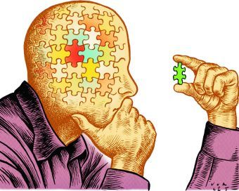
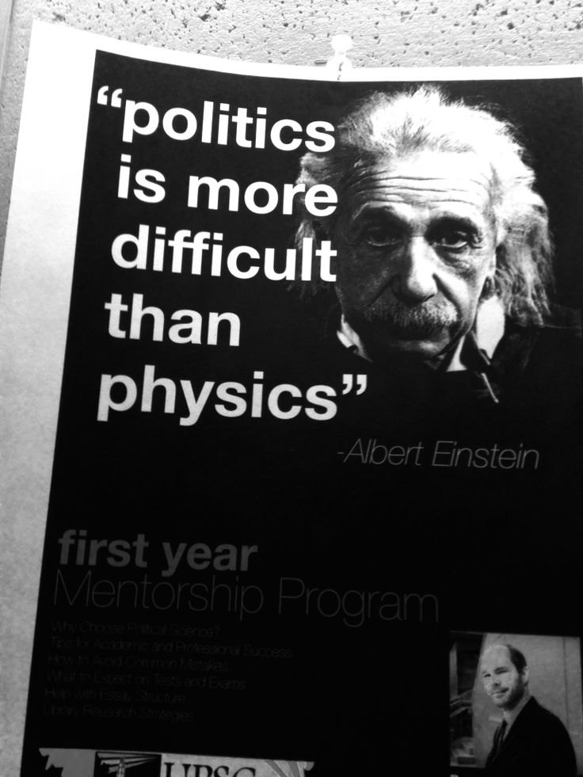

📚 Epistemology
Epistemology investigates knowledge, belief, truth and evidence.
Main Question
How do we know what is true?
Famous Philosophers
- John Locke
- David Hume
- Plato
Every branch of philosophy explores a different question about existence, knowledge, morality, beauty and human life.
Philosophy is far too broad to fit into one subject. Over thousands of years philosophers divided it into different branches, each asking its own unique questions. Together these branches help us understand ourselves, society and the universe.
Although philosophy is one discipline, it has grown into many branches. Each branch asks different questions while remaining connected to the search for wisdom and truth.
🌳 Philosophy
├── 🧠 Ethics
├── 🌌 Metaphysics
├── 📚 Epistemology
├── ⚖ Logic
├── 🎨 Aesthetics
├── 🏛 Political Philosophy
├── 🧠 Philosophy of Mind
├── 💬 Philosophy of Language
├── 🔬 Philosophy of Science
├── ⚖ Philosophy of Law
└── 🙏 Philosophy of Religion
Ethics studies morality, right and wrong, virtue, justice and human behaviour.
How should we live?
Metaphysics explores reality, existence, time, space and the nature of the universe.
What is reality?
Epistemology investigates knowledge, belief, truth and evidence.
How do we know what is true?
Logic studies reasoning, arguments and critical thinking.
How can we reason correctly?

Aesthetics explores beauty, art, creativity and artistic appreciation.
What makes something beautiful?
Political philosophy studies justice, liberty, rights and the ideal state.
What is the best form of government?

| Branch | Main Question | Example Philosopher |
|---|---|---|
| Ethics | How should we live? | Aristotle |
| Metaphysics | What is reality? | Plato |
| Epistemology | What is knowledge? | John Locke |
| Logic | How should we reason? | Aristotle |
| Aesthetics | What is beauty? | Immanuel Kant |
| Political Philosophy | What is justice? | John Locke |
Many philosophical questions appear in our daily lives even if we never realize it.
Should I always tell the truth?
Do we truly have free will?
Can I trust what I see?
Is this argument actually correct?
Why do I find this painting beautiful?
Should governments limit freedom?
Although philosophy is divided into different branches, they constantly overlap. Ethics relies on logic to build strong arguments. Political philosophy uses ethics to discuss justice. Philosophy of science depends on epistemology to explain how scientific knowledge is justified. Metaphysics asks questions about reality that influence philosophy of mind and religion.
Together, these branches form one interconnected discipline whose goal is to better understand ourselves, our societies, and the universe.